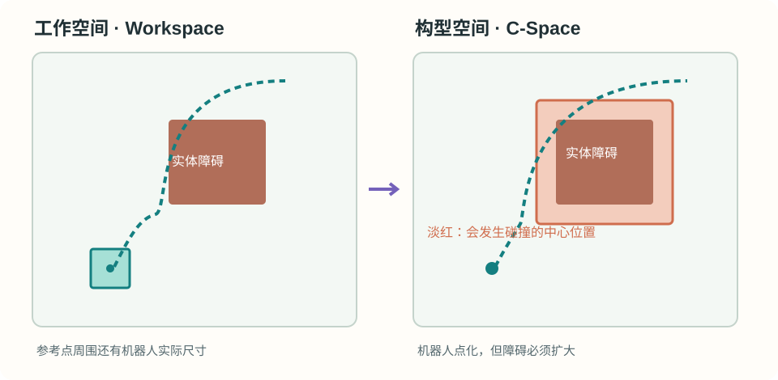
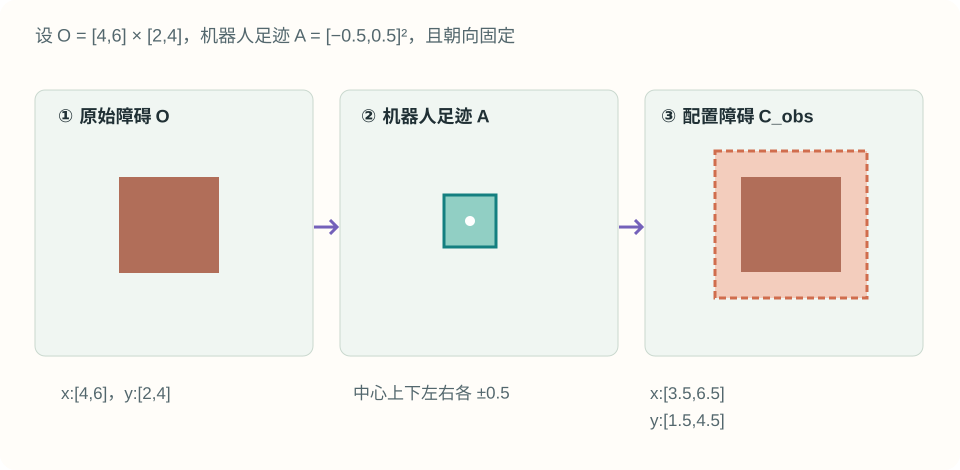
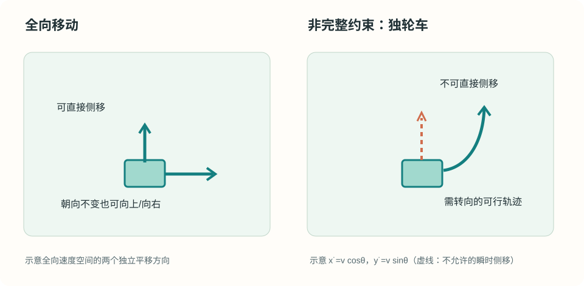

状态空间与构型空间
地图上没有障碍的点，不一定是机器人能到达的位置。把机器人自己的形状与运动能力放进规划问题，才开始定义真正的自由空间。
点机器人能过，真实机器人呢
两面墙之间有一条宽 70 厘米的通道。若在二维地图上把机器人表示为一个没有大小的点，通道当然可通过。但如果底盘宽 80 厘米，再好的 A* 或 RRT 也无法让它穿过去。问题不在“搜索没找到”，而在状态空间对碰撞的描述错了。
路径规划必须分清工作空间（物体实际占据的位置）与构型空间（机器人所有可能的配置）。前者回答“哪里有障碍”；后者回答“什么样的机器人姿态会碰撞”。两者不是同一个集合。
GEOMETRIC MODEL · 02

把机器人变成一个配置
对于平面上的圆盘或固定朝向的矩形机器人，只需两个位置坐标 q=(x,y)。如果机器人可以在平面自由旋转，则 q=(x,y,θ)；对于一个包含 n 个关节的机械臂，配置可以用关节角向量 q=(θ1,…,θn) 表示。
设 A(q) 为机器人在配置 q 时占据的物理区域，O 为环境中的障碍物集合。自由配置集合定义为 C_free = {q | A(q) ∩ O = ∅}。因此路径必须在 Cfree 内连续变化，而不是仅检查机器人参考点是否落在障碍外。
注意：构型 q 不一定等于系统完整状态。若规划需考虑速度、加速度、电机状态等，系统状态还会包括这些变量，例如 (x,y,θ,v)。
从障碍物到 C-obstacle
对只做平移、形状固定的机器人，以自身参考点为原点定义足迹 A。给定障碍 O，所有会发生碰撞的参考点位置构成配置障碍 Cobs。它与 Minkowski sum 有精确关系：
这里 A+q 表示足迹平移到 q，−A 是足迹关于原点的镜像，⊕ 表示两个集合中任意点相加的集合。对关于参考点中心对称的圆盘或轴对齐正方形，−A=A，因此常被直观地称作“按机器人半径/半宽膨胀障碍”。但对任意形状、带旋转的机器人，不能只盲目给障碍画等距外圈。
GEOMETRIC MODEL · 02

一条点路径只要不经过 Cobs，就可以保证对应的平移足迹与静态障碍不相交；如果未来还要考虑定位误差和安全余量，需要另外明确膨胀规则。
为什么原地横移并不合法
仅满足碰撞约束仍不够。全向移动平台可以允许 (x,y) 任意方向小位移；理想差速/独轮车模型则沿车头方向运动，不能在不转向的前提下瞬间横向滑动。常见的单轮车运动学模型是：
其中 v 是车体前进速度，ω 是角速度，θ 是朝向；单位依次为米/秒、弧度/秒和弧度。注意该理想模型可原地旋转，不应将它和具有最小转弯半径的汽车模型混为一谈；汽车模型通常用转角 δ、轴距 L 表示 θ 的变化。
GEOMETRIC MODEL · 02

维度增加时发生了什么
一个每个自由度离散为 k 个采样值的 n 维配置空间，朴素规则栅格可能需要 kn 个组合。比如每维取 20 个候选值，二维是 400，六维就是 64,000,000。这个数量是离散组合上界示例，不是任何给定算法的实际访问节点数。
高维问题常转向 PRM、RRT 这类采样法，避免显式枚举每一个网格组合；但它们仍要面对碰撞检测、局部连接与窄通道采样效率等难题。状态维度增长与动态障碍增加，是两种不同的复杂性来源。
用 Python 亲自检查一次
以下代码只实现轴对齐矩形障碍 + 只平移的正方形机器人的单点碰撞查询，边界相切也视为碰撞。运行环境 Python 3.10+，无依赖。它不是连续路径的碰撞检测器。
def collides_with_rectangle(center, obstacle, half_width=0.5):
"""平面平移、轴对齐正方形机器人；边界接触视为碰撞。"""
x, y = center
xmin, ymin, xmax, ymax = obstacle
return (xmin-half_width <= x <= xmax+half_width and
ymin-half_width <= y <= ymax+half_width)
obstacle = (4.0, 2.0, 6.0, 4.0)
assert collides_with_rectangle((3.6, 2.4), obstacle)
assert not collides_with_rectangle((3.4, 2.4), obstacle)
assert collides_with_rectangle((6.5, 3.0), obstacle) # 边界相切
print("Collision tests passed")要验证一整条路径，不能只检查端点。对于上述轴对齐矩形的静态环境，可以对路径的每条线段与 Cobs 做连续线段-矩形相交检测；更一般的场景则用保守步长采样结合连续碰撞检测算法，避免“采样间隔跨过薄墙”。
三条容易被误用的结论
- “障碍物膨胀后就安全”只对所选足迹、姿态、坐标变换和安全余量成立。离散代价地图中的 inflation layer 也不总等价于严格几何 Minkowski 和。
- “点路径无碰撞”不意味着动力学可执行，特别是车辆倒车、最小转弯半径、速度界限等约束。
- “高维一定无法计算”过于绝对；计算量依赖表示方式、几何结构、碰撞检测复杂度和算法，kn 仅是均匀枚举的典型增长。
归纳：第一步选对状态变量；第二步根据真实机器人几何形成自由空间；第三步针对运动约束选择连接器或运动原语。只有三者一致，搜索结果才具有物理含义。